Golay Coded Excitation for Plane-Wave Ultrasound Imaging
Overview
Conventional ultrasound imaging transmits a short pulse. A short pulse gives good axial resolution, but it carries limited energy, so the signal-to-noise ratio (SNR) falls off quickly with depth. Coded excitation addresses this by transmitting a longer, coded waveform and then compressing the received echo back into a short pulse on receive.
I implemented Golay complementary coded excitation on a Verasonics Vantage ultrasound research system for multi-angle plane-wave imaging. I then evaluated it against conventional short-pulse excitation on a 50 μm wire phantom, comparing point intensity, sidelobe level, SNR at two depths, and axial and lateral resolution.
Objective
The objective was to implement Golay coded excitation end to end on the Vantage system, covering arbitrary transmit waveforms, paired acquisitions, and pulse-compression decoding. A second objective was to quantify whether it improves SNR without degrading spatial resolution, compared with conventional short-pulse plane-wave imaging.
Background: Golay Complementary Codes
A Golay pair is two binary (±1) sequences, A and B, of equal length N. Each code's autocorrelation alone has range sidelobes. However, the sidelobes of A and B have equal magnitude and opposite sign. When the two compressed signals are added, the sidelobes cancel and only a single peak of height 2N remains:
In imaging, this means two transmissions are needed for each line or angle: one with code A and one with code B. Each received echo is matched-filtered with its own code, and the two results are summed. In theory, the gain in SNR from a length-N Golay pair is 10·log10(2N) dB at the same peak transmit voltage. The trade-off is that frame rate is halved, and any tissue motion between the A and B transmissions weakens the sidelobe cancellation.
Approach
1. Paired Coded Transmissions
For each plane-wave steering angle, two transmit events were defined: one with
Golay code A and one with Golay code B. The coded waveforms
were built as arbitrary transmit waveforms on the Vantage system
(TW.type = 'States'), and the RF data from each pair was received
and stored separately (RFA, RFB).
2. Pulse Compression and Decoding
Each received RF signal was correlated with its matching code (matched filtering). The two compressed signals were then summed, which gives a clean, short-pulse-equivalent RF signal in which the range sidelobes cancel.
3. Beamforming and Image Formation
The decoded RF data was beamformed into B-mode images using the multi-angle plane-wave workflow. Matching short-pulse acquisitions were reconstructed the same way to serve as the baseline.
4. Quantitative Evaluation
The Golay and short-pulse images were compared using peak point-target intensity, mainlobe-to-sidelobe level, SNR measured from signal and noise regions at two depths, and axial and lateral point-spread-function (PSF) profiles measured as FWHM at −6 dB.
Challenge: Mismatched Transmit and Receive Sampling
My first decoding attempt correlated the received RF data directly with the acoustic transmit waveform. This did not work. The Vantage defines transmit waveforms on a 250 MHz grid, but the receive data was sampled at 31.25 MHz. The two signals were on different time grids, so the correlation did not compress the echo.
To fix this, I converted the Golay ±1 bits into an impulse code sampled at the receive rate. Each chip (+1 or −1) became a single impulse, placed exactly where that chip begins in the received signal, and the code was zero-padded to the RF signal length. Sliding this impulse pattern across the RF data (correlation) produced a sharp correlation peak, which is the expected pulse-compressed output.
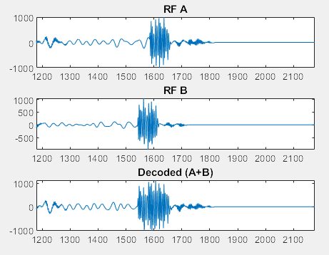
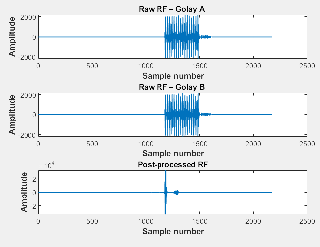
Experimental Setup
I built a wire phantom using a 50 μm diameter wire, which is about one quarter of the transducer wavelength. The linear-array transducer has a center frequency of 7.6 MHz, which gives a wavelength of about 0.2 mm. At this size the wire acts as a point scatterer, so it can be used to measure the system's point-spread function.
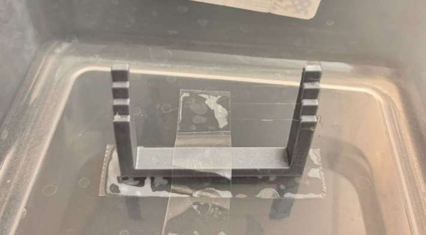
Results
B-Mode Comparison and Point Intensity
Both acquisitions show the wire targets clearly. With Golay coding, the point target is brighter: its peak pixel intensity reached 255, compared with 205 without Golay coding.
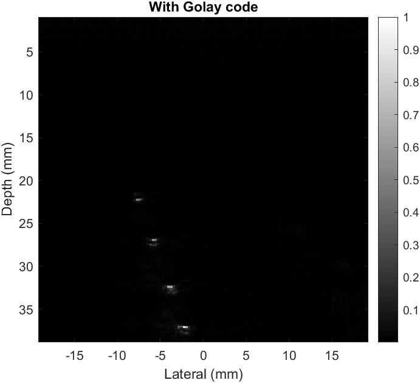
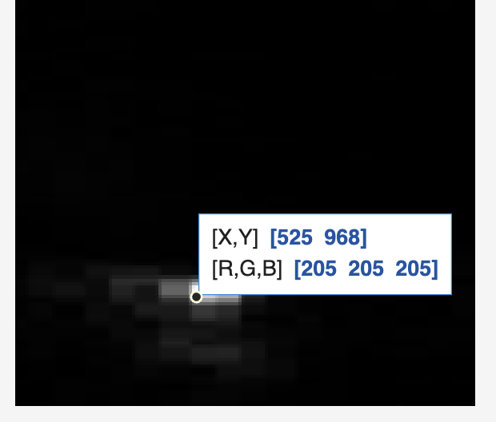
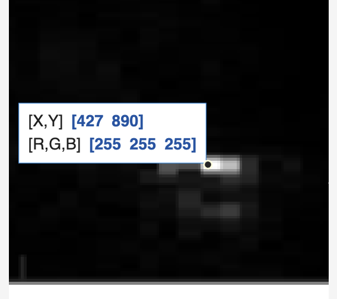
Mainlobe and Sidelobe Analysis
The envelope of a single RF line through the target was used to estimate SNR and the maximum sidelobe level. With Golay coding, the estimated SNR rose from 91.50 dB to 105.85 dB. The maximum sidelobe level stayed close to the short-pulse case, at −23.4 dB vs −22.7 dB.
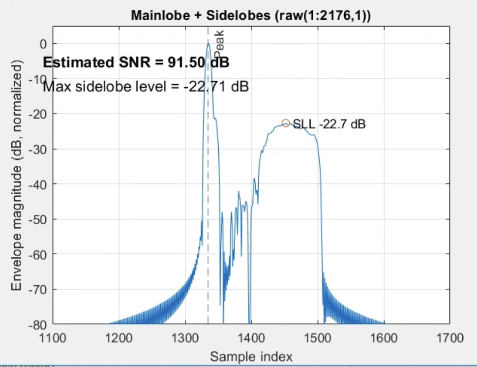
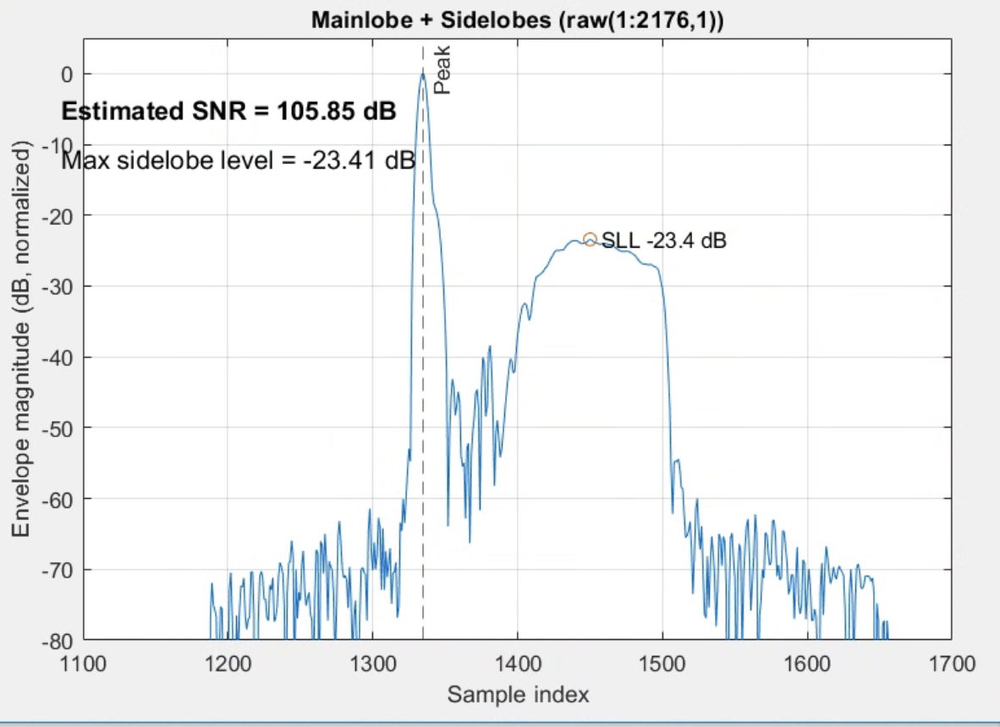
SNR vs Depth
SNR was measured at two point targets at different depths. At each target, a signal region was placed on the target and a noise region was placed directly next to it. Golay coded excitation gave higher SNR at both depths. The gain was larger at the shallower target in this measurement.
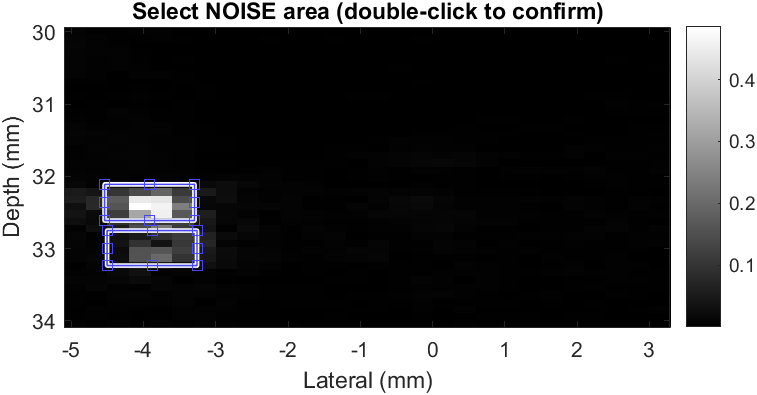
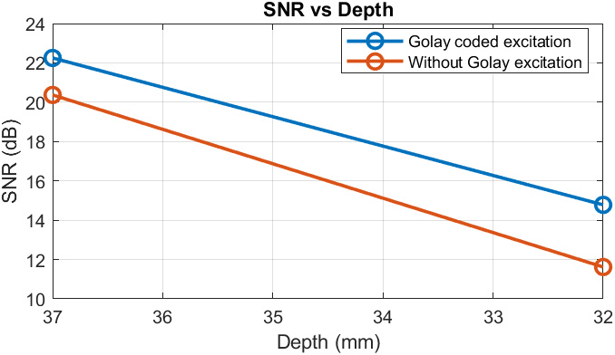
| Depth | Golay Coded Excitation | Without Golay (Short Pulse) | Improvement |
|---|---|---|---|
| 37 mm | 22.25 dB | 20.37 dB | +1.88 dB |
| 32 mm | 14.78 dB | 11.62 dB | +3.16 dB |
Spatial Resolution
Axial and lateral PSF profiles were extracted through a point scatterer at about 145 λ depth. Resolution was measured as the FWHM at the −6 dB level.
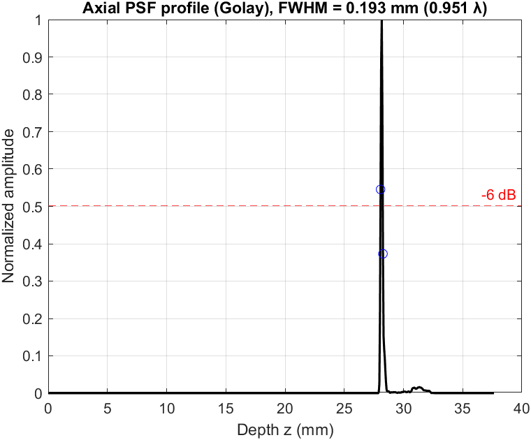
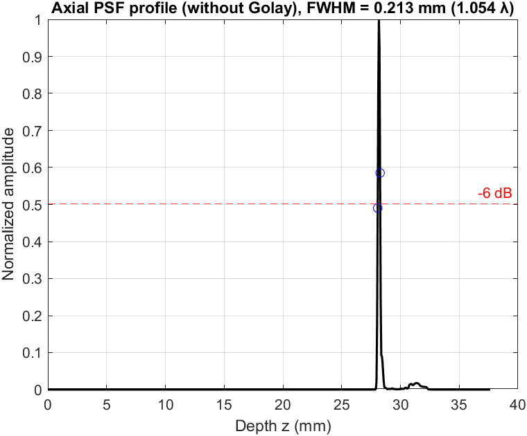
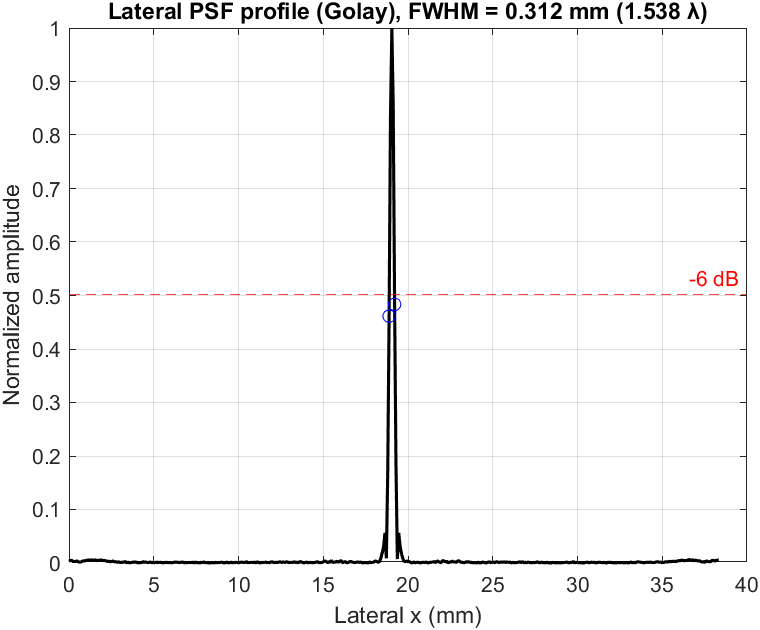
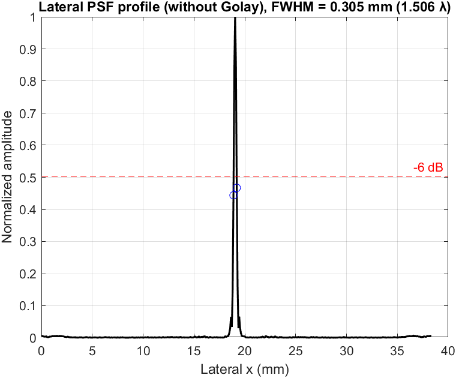
| Metric | Golay Coded Excitation | Without Golay (Short Pulse) |
|---|---|---|
| Axial FWHM | 193 μm (0.95 λ) | 213 μm (1.05 λ) |
| Lateral FWHM | 312 μm (1.54 λ) | 305 μm (1.51 λ) |
What I Learned
-
How to define arbitrary transmit waveforms on the Verasonics Vantage
using
TW.type = 'States'. - How multiple coded transmit waveforms are sequenced, transmitted, and received within a single acquisition.
- How pulse compression and complementary-code decoding work in practice.
- How the Vantage's transmit sampling rate (250 MHz) differs from its receive sampling rate (31.25 MHz), and why this matters for matched filtering.
My Contribution
- Implemented Golay A/B coded transmit waveforms for multi-angle plane-wave imaging on a Verasonics Vantage system.
- Built the receive-side pulse-compression and complementary decoding pipeline in MATLAB.
- Diagnosed the transmit/receive sampling-rate mismatch and designed a receive-rate impulse-code correlation to fix the decoding.
- Built a 50 μm wire phantom for point-spread-function measurements.
- Acquired matched Golay and short-pulse datasets and reconstructed B-mode images.
- Quantified point intensity, sidelobe level, SNR vs depth, and axial and lateral FWHM.
Next Steps
The next step is Hadamard encoding across plane-wave angles, which allows faster multi-angle acquisition. After that, the plan is to combine Hadamard and Golay encoding, so that the SNR gain from Golay coding can be kept without the frame-rate cost of paired transmissions.
Tools & Technologies
MATLAB · Verasonics Vantage · Coded Excitation · Golay Complementary Codes · Pulse Compression · Matched Filtering · Plane-Wave Beamforming · Signal Processing · Phantom Imaging
References
- A. Nowicki, M. Lewandowski, W. Secomski, J. Litniewski, R. Tymkiewicz, "High Frequency Imaging Using Coded Golay Transmission," IEEE Ultrasonics Symposium, 2005.
- X. Wang, J. Yang, J. Ji, Y. Zhang, S. Zhou, "Research on Golay-coded excitation in real-time imaging of high frequency ultrasound biomicroscopy," Scientific Reports, 11, 1848, 2021. doi:10.1038/s41598-020-80406-x